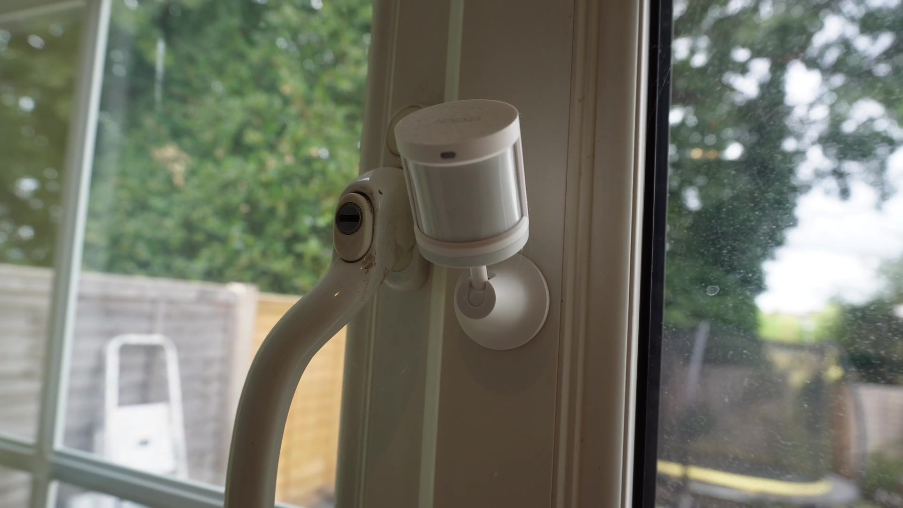

test
Note: This is generated from a transcript from one of my YouTube videos
This article provides a comprehensive guide to building and maintaining a robust and reliable ZigBee network for home automation. It covers essential topics from selecting the right hardware to advanced troubleshooting techniques using log files.
Building a proper ZigBee network that functions reliably is crucial for effective home automation. Many users encounter challenges with existing mesh networks, leading to connectivity issues. This guide addresses these common problems by covering fundamental concepts and advanced diagnostic methods. Topics include the importance of coordinator placement, identifying and resolving errors in network logs, understanding coordinators, routers versus end devices, channel selection, and interference. Log files, often overlooked, play a key role in diagnosing network issues and establishing a solid setup. The information presented progresses from basic principles to more advanced techniques.
Understanding Your ZigBee Coordinator: The Network’s Brain


To ensure optimal network performance, thorough research is essential when selecting a coordinator. Avoid purchasing the cheapest USB stick available without proper investigation. It is recommended to review product compatibility, read community forums, and check user reviews. Investing a small amount more at this stage can prevent weeks of frustration later. For example, the SLZB 06M is a recommended power-over-Ethernet coordinator, known for its reliability and range. This device is not a USB stick but offers superior performance. It has proven to be exceptionally stable and provides excellent range.
Even with the best coordinator, its physical placement is more critical than often perceived. Further details on placement will be discussed later. If a USB coordinator is in use, it is imperative to utilize a USB extension cable. This is because USB 3 ports can generate electromagnetic interference that disrupts the ZigBee channel. This is not a theoretical issue; demonstrations by Nabu Casa have shown that moving a USB cable closer to a coordinator can cause it to cease functioning. Such interference can lead to erratic and difficult-to-troubleshoot device drop-offs. Therefore, ensuring the use of a shielded USB extension cable is crucial. A simple extension cable is inexpensive and can prevent significant network instability.
Position the coordinator away from USB 3 ports and ideally in a central location within the home. Consider the home’s layout and the distribution of ZigBee devices. A central ground-floor location may not be effective if a significant portion of devices are located upstairs. If the coordinator is situated in the middle of the house surrounded by solid walls, be aware that 2.4 GHz signals may not penetrate these barriers effectively.
While connecting devices directly to the coordinator might seem efficient, coordinators have a device limit. It is essential to consult the coordinator’s documentation for its specific device capacity. This limitation is generally not an issue for new ZigBee networks with a few devices. However, as the network expands to 80 or more devices, performance problems may arise. The ultimate goal is to establish a robust mesh network.
Optimizing ZigBee Channel Selection for Minimal Interference


This decision is critical: if the ZigBee channel is changed after initial setup, every single device in the network will require re-pairing. This process is highly time-consuming and undesirable, especially for networks with 50 or more devices.
Differentiating ZigBee Device Types: Routers vs. End Devices
Routers are typically devices that have a constant power supply. Examples include smart plugs, light switches, and smart bulbs. However, it is important to note that not all powered devices function as routers. Always consult the device’s documentation to confirm its routing capabilities. Assuming all mains-powered devices are routers can be a dangerous assumption. Some manufacturers produce mains-powered devices that only act as end devices, which limits their utility in strengthening the mesh network. For instance, certain Eukara H1 light switches, despite being powered, do not function as routers.
End devices are typically battery-powered sensors, such as motion sensors, door sensors, and temperature sensors. These devices do not route traffic for other devices. They connect to the network and transmit their own data but do not forward packets for other devices.
While devices can generally connect to any router within range, some devices can be particular about which routers they establish connections with. To optimize routing, it is beneficial to pair devices in their final installed position. Avoid pairing devices next to the coordinator and then relocating them across the house, as they may attempt to maintain the original, less optimal connection even if a better route is available nearby.
Building a Robust ZigBee Mesh Network
A common troubleshooting challenge arises from “sticky” devices, such as certain Aqara devices. These devices tend to latch onto the first router they connect to and may refuse to switch to a stronger, more optimal router, even if the signal strength is poor. This behavior underscores the importance of pairing such devices in their final installed location. Additionally, avoid overloading individual routers, as they have limits on the number of devices they can handle.
For advanced users, it is possible to pair end devices with specific routers. For example, Zigbee2MQTT offers an option to open pairing on the network for specific devices, which can be highly beneficial for fine-tuning the mesh. It is highly recommended to explore this feature.
Advanced Troubleshooting: Leveraging ZigBee Log Files
A typical ZigBee setup includes a database of all devices, a configuration file mapping device IDs to friendly names, and the log file where all network events are recorded. For instance, if the logs display frequent “root error many to one failures,” this indicates a recurring issue. Manually sifting through numerous log instances to determine the frequency and source of such errors is impractical.
To efficiently analyze these errors, the process involves:
- Identifying the Device ID: Extracting the unique ID (IEEE address) associated with the error from the log file.
- Mapping to Friendly Name: Using the configuration or database to map the IEEE address to a user-friendly device name (e.g., “Snug LED Vance socket”). This allows for direct identification of the problematic device. The system shows the IEEE address, which can then be used to look up the friendly name. For example, an error associated with a specific ID can be traced back to the “Snug LED Vance socket.”
To automate this analysis, artificial intelligence (AI) tools can be leveraged. For example, an AI model like Claude can be used. The process involves:
- Uploading Data: Uploading historical log files, configurations, and database snapshots.
- Prompting the AI: Providing a prompt instructing the AI to identify specific errors (e.g., “root error many to one failures”) across the uploaded logs and configurations. The prompt should also request the AI to perform the mapping from device IDs to friendly names.
- Receiving Analysis: The AI processes the data and generates an artifact. This output typically includes the friendly name of the device, its IEEE address, the type of error, its criticality, and its frequency in the logs.
- Leveraging Insights: This automated analysis allows users to quickly understand network issues.
The system displays the friendly name, the IEEE address, and details about the errors, including their criticality and frequency. This capability can be easily leveraged to diagnose network problems.
After implementing fixes, a new analysis can be performed on updated logs and configurations. The system will show significantly lower error counts, indicating successful remediation. For instance, only very low-severity errors might remain, some of which could be transient issues like configuration timeouts during startup. The AI can also provide recommendations and confirm that certain issues are minor or transient. This confirms that the cleanup was highly successful.
In summary, while manual log review provides hints, AI tools can enumerate instances and guide the next steps for troubleshooting.
Conclusion: Key Principles for a Reliable ZigBee Network
Building a reliable ZigBee network is achievable but requires patience and a fundamental understanding of how these devices interact.
To establish a robust network:
- Start with a high-quality coordinator.
- Carefully select your ZigBee channel to avoid interference.
- Understand the distinction between routers and end devices and their roles in the mesh.
- Regularly review your network logs for insights into performance and issues.
Adhering to these principles will result in an incredibly reliable, responsive, and functional smart home network. Neglecting these steps can lead to persistent connectivity problems, diminishing the benefits of smart home technology.
If this guide has been helpful, consider sharing it with others who might benefit. For any ZigBee challenges or additional insights, please provide feedback. Your input is valuable and can contribute to future educational content. Happy automating!
Links:
Video
You can watch the full video on YouTube here:
Transcript
Support me to keep making videos

If you like the work I’m doing, please drop a like on the video, or consider subscribing to the channel.
In case you’re in a particularly generous mood, you can fund my next cup of coffee over on Ko-Fi
The links from some of my videos are affiliate links, which means I get a small kickback at no extra cost to you. It just means that the affiliate knows the traffic came from me.